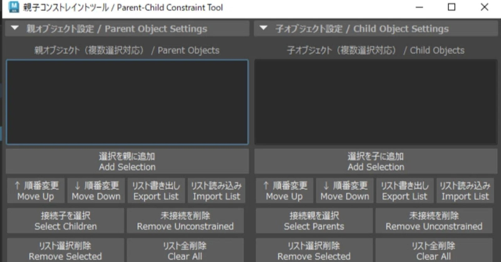

Create_Constraint_Tool：Maya 多物件 Constraint 改成批次管理
免費 Maya Python 工具集中管理 Point／Orient／Scale／Parent Constraint、軸向與 Maintain Offset。

綁定 ★★★★☆
完整分析
技術／流程變更
工具先整理多組父子物件，再統一套用四類 Constraint，並可逐軸控制與保存清單，避免逐物件重複設定。
Production 影響
對角色綁定、道具跟隨與動畫 setup，可直接降低操作次數與漏設軸向風險，也有利於固定 rigging SOP。
導入測試與限制
正式導入前應以 Maya 2023+ 測 namespace、reference rig、既有 constraint 與 undo 行為，再決定是否放進工具架。
BRIEF｜來源已驗證；證據深度較有限，完整分析會明確區分已知資訊與待驗證事項。